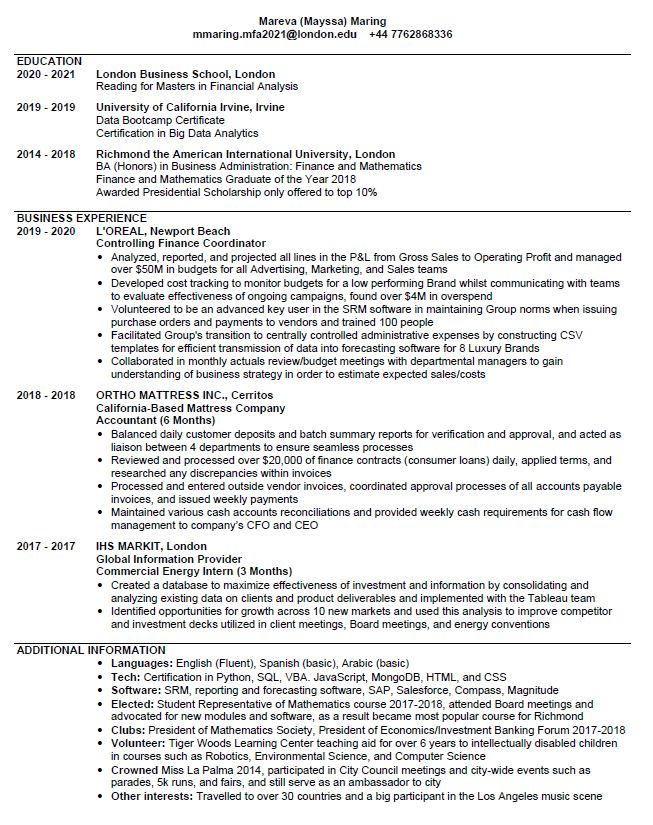

This Portfolio shows my work in R, however I do have experience in Python, SQL, HTML, CSS, and JavaScript as can be seen in my CV. Please find the relevant works on my GitHub (link at the bottom of the page).
If you have any suggestions, please get in touch
